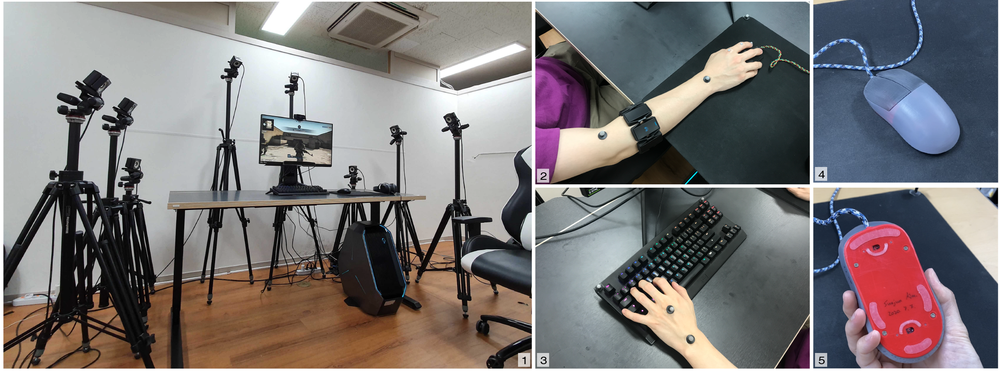
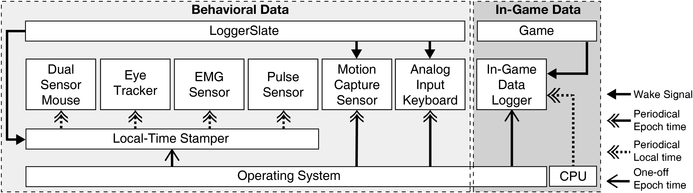
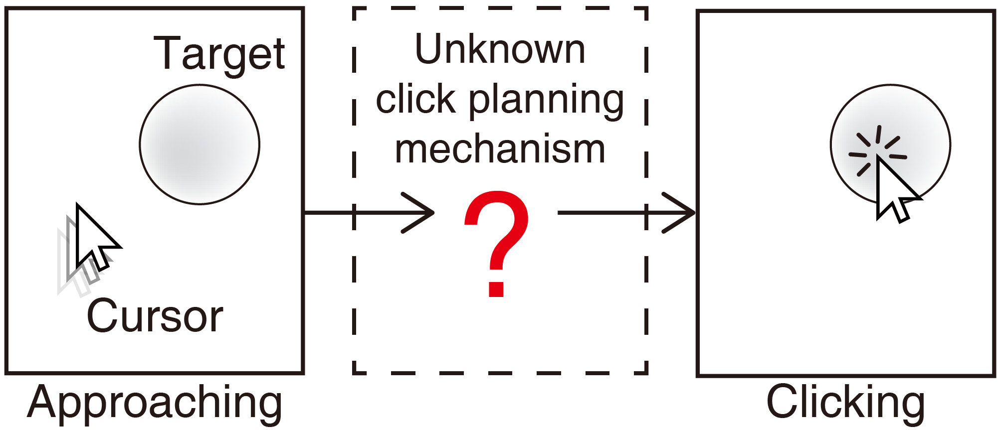
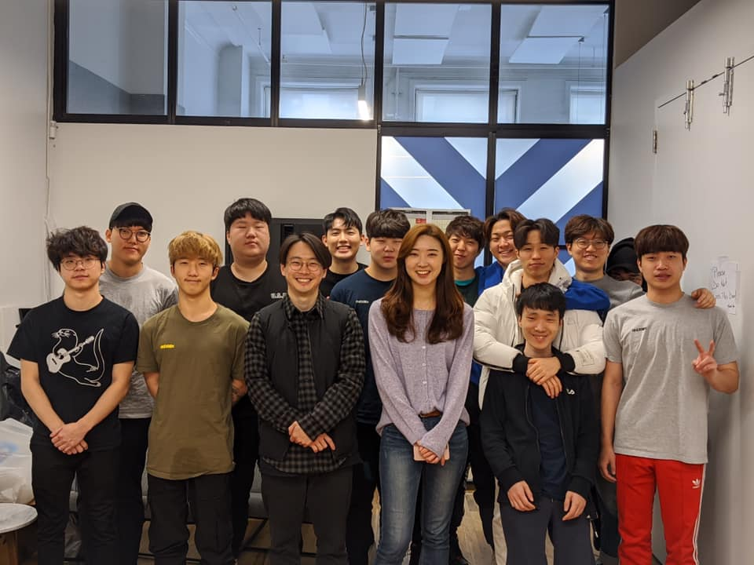

✦ Jun 2021 Got a research Subsidy fund for Ph.D. Candidates from NRF (National Research Foundation of Korea)
✦ Mar 2021 'Secrets of Gosu: Understanding Physical Combat Skills of Professional Players in First-Person Shooters' paper received an Honourable Mention Award at CHI2021 !
✦ Dec 2020 'Secrets of Gosu: Understanding Physical Combat Skills of Professional Players in First-Person Shooters' paper has been accepted at CHI2021
✦ Mar 2020 'An Intermittent Click Planning Model' paper received an Honourable Mention Award at CHI2020 ! ...
✦ Feb 2020 Visited New York for joint research with NYXL (New York Excelsior), the best Overwatch team in the world
✦ Dec 2019 'An Intermittent Click Planning Model' paper has been accepted at CHI2020
✦ Oct 2019 Got a Kimyounghan Global Leader Scholarship
About me
I am a HCI researcher of HCI KAIST and a Ph.D. student in School of Computing at KAIST.
Currently, I am a member of Interactive Computing Lab and my advisor is Prof. Uichin Lee.
I received my M.S. degree in Culture Technology from KAIST in 2019 and I was under the supervision of Prof. Byungjoo Lee from 2017 to 2020.
I worked for SK Hynix as an R&D researcher from 2015 to 2017.
I received my B.S. degree in Material Science and Engineering from KAIST in 2015.
I am interested in quantifying and measuring the user's performance. Currently, I am a leading member of the project called GamerLab with several other researchers from KAIST and Aalto University.
I have been working on a quantitative analysis of gamers' physical and cognitive abilities in various types of games based on cognitive models.
I have specifically focused on the 'FPS game genre' where gamers' cognitive and physical skills are incredibly crucial.
Other than the academic things, I am a lover of adventure and sports. Playing games 🎮, driving 🚗, golf ⛳, and talking with inspiring people 🕊 always perk me up.
Secrets of Gosu: Understanding Physical Combat Skills of Professional Players in First-Person Shooters
(Best Paper Honorable Mention Award (top 5%)) Eunji Park, Sangyoon Lee, Auejin Ham, Minyeop Choi, Sunjun Kim, and Byungjoo Lee ACM CHI 2021 PaperDownload paper /
Talk(Remote presentation)
26.3% Acceptance rate
An Intermittent Click Planning Model
(Best Paper Honorable Mention Award (top 5%)) Eunji Park and Byungjoo Lee ACM CHI 2020 PaperDownload paper /
Talk(Remote presentation) 23.8% Acceptance rate
Moving Target Selection: A Cue Integration Model
Byungjoo Lee, Sunjun Kim, Antti Oulasvirta, Jong-In Lee, and Eunji Park ACM CHI 2018 paperDownload paper 25.7% Acceptance rate
• Extended Abstracts and Workshop Papers
Button++: Designing Risk-aware Smart Buttons Eunji Park, Hyunju Kim and Byungjoo Lee ACM CHI 2018 LBW Download paper
A Study on the Effect of Inter Key Spacing on Typing Performance
Hyunju Kim, Eunji Park and Byungjoo Lee HCI KOREA 2018
Honors and Awards
2021 Research Subsidies for Ph.D. Candidates , NRF (National Research Foundation of Korea)
2021 Best Paper Honorable Mention Award , ACM CHI 2021
2020 Best Paper Honorable Mention Award , ACM CHI 2020
2019 Kimyounghan Global Leader Scholarship
2017 Wonkwangyeon Hall Exibition Competition - 'Water lily', Grand Prize
2014 Taewool Music Concours - Silver Prize
Services
• Organizing
2019 SIGCHI Korea Local Chapter Workshop Local Co-Chair
• Reviewing
CHI 20 LBW / CHI PLAY 19 WIP / CHI PLAY 20 WIP / CSCW 20 Poster
Teaching Experience
• Teaching Assistant
2021 KAIST KSE531 HCI Theory & Pratice (Spring)
2020 KAIST CTP404 Making Things (Spring)
2019 KAIST GCT564/CS564 Introduction to Data Analytics Using R (Spring)
2017 KAIST GCT741 Human-Computer Interaction (Fall)
Projects
• Secrets of Gosu: Understanding Physical Combat Skills of Professional Players in First-Person Shooters


In first-person shooters (FPS), professional players (a.k.a., Gosu) outperform amateur players. The secrets behind the performance of professional FPS players have been debated in online communities with many conjectures; however, attempts of scientific verification have been limited. We addressed this conundrum through a data-collection study of the gameplay of eight professional and eight amateur players in the commercial FPS Counter-Strike: Global Offensive. The collected data cover behavioral data from six sensors (motion capture, eye tracker, mouse, keyboard, electromyography armband, and pulse sensor) and in-game data (player data and event logs). We examined conjectures in four categories: aiming, character movement, physicality, and device and settings. Only 6 out of 13 conjectures were supported with statistically sufficient evidence.
• An Intermittent Click Planning model

Pointing is the task of tracking a target with a pointer and confirming the target selection through a click action when the pointer is positioned within the target. Little is known about the mechanism by which users plan and execute the click action in the middle of the target tracking process. The Intermittent Click Planning model proposed in this study describes the process by which users plan and execute optimal click actions, from which the model predicts the pointing error rates. In two studies in which users pointed to a stationary target and a moving target, the model proved to accurately predict the pointing error rates (R2 = 0.992 and 0.985, respectively). The model has also successfully identified differences in cognitive characteristics among first-person shooter game players.

Esports is sports; this is the foundational idea that initiated our current research project. The economic values and market size of Esports have been skyrocketing each year. With such an influx of attention, Esports eco-systems, such as league operations and player management, are resembling more like other traditional sports in many aspects. However, unlike other conventional sports, Esports still lack scientific approaches, especially in player training and drafting. Researchers from diverse scientific fields, from physiology, biomechanics, kinesiology to sports medicine, have been supporting the advancement of the performances of traditional sports athletes. We believe that similar cooperation is evident in Esports as well. Since it involves dynamic interaction between players and computers, different scientific approaches are necessary, such as Human-Computer Interaction.
According to many FPS game players, to defeat opponents in the game requires two essential abilities: mechanics and strategy. Of those, we have focused on the individual player’s personal physical and cognitive ability, which define the mechanics. To compare the performance individually, we tried to quantify and measure the abilities based on the mathematical models. So far, we have completed numerous research on measuring cognitive abilities; the papers ‘Temporal Pointing’, ‘Moving Target Selection’, and ‘ICP Model’ have been verified and submitted to the ACM CHI conference, a top-tier conference on the Human-Computer Interaction field. --
Request full report
• Calculating Aesthetics (Media Art Exibition) - 'Water lily'